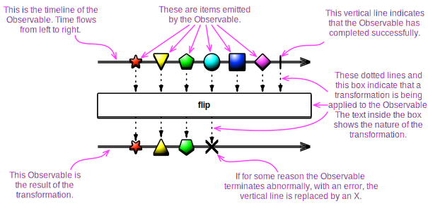
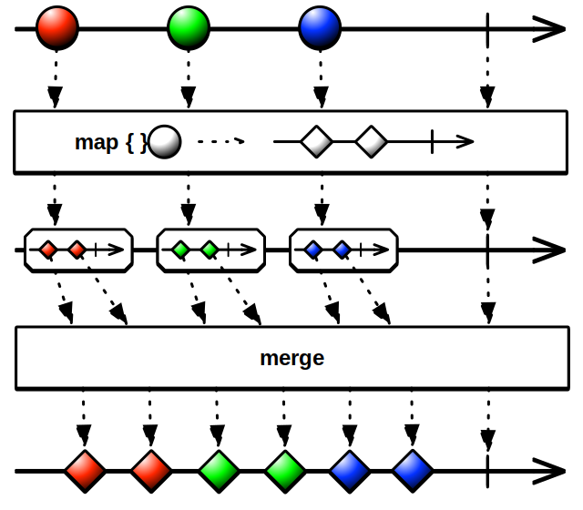
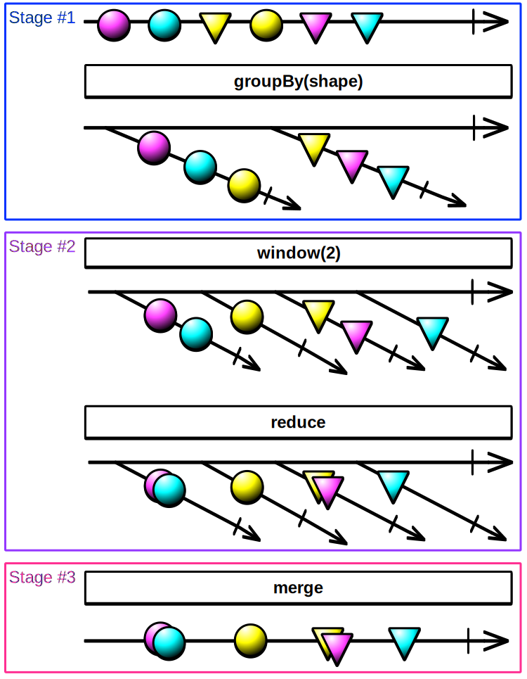
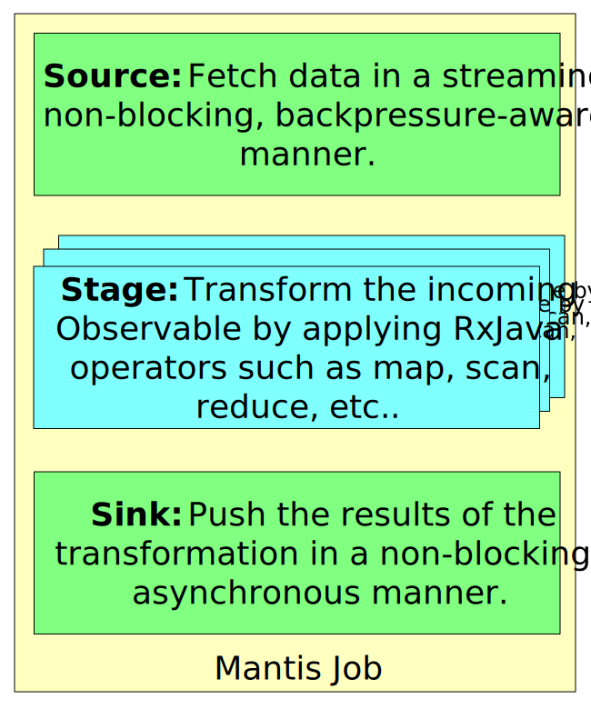

Introduction
A Mantis Job is a JVM-based stream processing application that takes in an Observable stream of data items, transforms this stream by using RxJava operators, and then outputs the results as another Observable stream.
RxJava Observables can be visualized by using “marble diagrams”:

You can combine multiple RxJava operators to transform an Observable stream of items in many ways:

The above diagram shows a Mantis Job composed of two operators that process an input stream to
compose an output stream. The first operator, map, emits a new Observable for each item emitted by
the source Observable. The second operator, merge, emits each item emitted by those Observables
as a fresh Observable stream.
There is an enormous wealth of ways in which you can transform streams of data by using RxJava Observable operators.
If the volume of data to be processed is too large for a single worker to handle, you can “divide and conquer” by grouping and dividing the operators across various processing stages, as in the following diagram:

Mantis Job Clusters¶
You define a Job Cluster before you submit Jobs. A Job Cluster is a containing entity for Jobs. It defines metadata and certain service-level agreements (SLAs). Job Clusters ease Job lifecycle management and Job revisioning.
For example, by setting the SLA of a Job Cluster to Min=1 and Max=1, you ensure that exactly one Job instance is always running for that Cluster. The Job Cluster also has default Job parameters that any new Jobs submitted to the Cluster inherit. You can update new Job artifacts into the Job Cluster so that the next Job submission picks up the latest version.
Components of a Mantis Job¶
A Mantis Job has three components, each of which has a corresponding chapter in this documentation:
-
Source — Fetches data from an external source and makes it available in the form of an Observable.
-
Processing Stage — Transforms the Observable stream by means of a variety of operators.
-
Sink — Pushes the resulting Observable out in the form of a fresh stream.

Directory Structure of a Mantis Job¶
In addition to the source files, Mantis requires some meta-files to be present in the Job artifact.
Here is a sample directory structure:
src/
- main/
- java/
- com/
- myorg/
- MyJob.java
- resources/
- META-INF/
- services/
- io.mantisrx.runtime.MantisJobProvider
- job.properties
- job-test.properties
io.mantisrx.runtime.MantisJobProvider(required) — lists the fully-qualified name of the Java class that implements theMantisJobProviderinterfacejob.propertiesandjob-test.properties(optional) — required only if you are initializing the platform via the.lifecycle()method
Creating a Mantis Job¶
To create a Mantis Job, call MantisJob…create(). When you do so, interpolate the following builder
methods. The first three — .source(), .stage(), and .sink() — are required, they must be the
first three of the methods that you call, and you must call them in that order:
.source(AbstractJobSource)— required, see The Source Component.stage(Stage, stageConfig)— required, (call this one or more times) see The Processing Stage Component.sink(Sink)— required, see The Sink Component.lifecycle(Lifecycle)— optional, allows for start-up and shut-down hooks.parameterDefinition(ParameterDefinition)— optional, (call this zero to many times) define any parameters your job requires here.metadata(Metadata)— optional, (call this zero to many times) define your job name and description here
| of this class | this method | returns an object of this class |
|---|---|---|
MantisJob ⟶ |
source() ⟶ |
SourceHolder⤶ |
SourceHolder ⟶ |
stage() ⟶ |
Stages⤶ |
[ Stages ⟶ |
stage() ⟶ |
Stages ]⤶ |
Stages ⟶ |
sink() ⟶ |
Config⤶ |
[ Config ⟶ |
lifecycle() ⟶ |
Config ]⤶ |
[ Config ⟶ |
parameterDefinition() ⟶ |
Config ]⤶ |
[ Config ⟶ |
metadata() ⟶ |
Config ]⤶ |
Config ⟶ |
create() ⟶ |
Job |
Lifecycle Management¶
You can establish start-up and shut-down procedures for your Mantis Job by means of the
.lifecycle(). builder method.
Pass this method a Lifecycle object, that is to say, an object that implements the following
methods:
startup()— initialize arbitrary application configs, perform dependency injection, and any long running or shared service libraries.shutdown()— gracefully close connections, shut down long running or shared service libraries, and general process cleanup.getServiceLocator()— returns aServiceLocatorthat implements theservice(key)method. Implement this method to return your dependency injection object such as Guice.
Defining Parameters¶
To create a Parameter in order to pass it to the .parameterDefinition() builder method of the
MantisJob builder, use the following new ParameterVariety()…build() builder
methods:
.name(string)— a user-friendly name for your Parameter.description(string)— a user-friendly description of your Parameter.defaultValue(value)— the value of this Parameter if the Job does not override it.validator(Validator)— a way of checking the proposed Parameter values for validity so bad values can be rejected before you submit the Job.required()— call this builder method if the Job must provide a value for this Parameter
There are some built-in Parameter varieties you can choose from that correspond to common data types:
BooleanParameterDoubleParameterIntParameterStringParameter
Validators¶
There are some standard Validators you can choose from that cover some common varieties of parameters:
Validators.range(start, end)— will reject as invalid Parameter values that do not lie between the indicated start and end numerical values (where start and end themselves are valid Parameter values)Validators.notNullOrEmpty()— will reject empty strings or null valuesValidators.alwaysPass()— will not reject any Parameter values as invalid
Example¶
For example:
myStringParameter = new StringParameter().name("MyParameter")
.description("This is a human-friendly description of my parameter")
.validator(Validators.notNullOrEmpty())
.defaultValue("SomeValue")
.required()
.build();
Defining Metadata¶
To create metadata in order to pass it to the .metadata() builder method of the MantisJob
builder, use the following new Metadata.Builder()…build() builder methods:
.name(string).description(string)
For example:
myMetadata = new Metadata.Builder().name("MyMetadata")
.description("Description of my metadata")
.build();